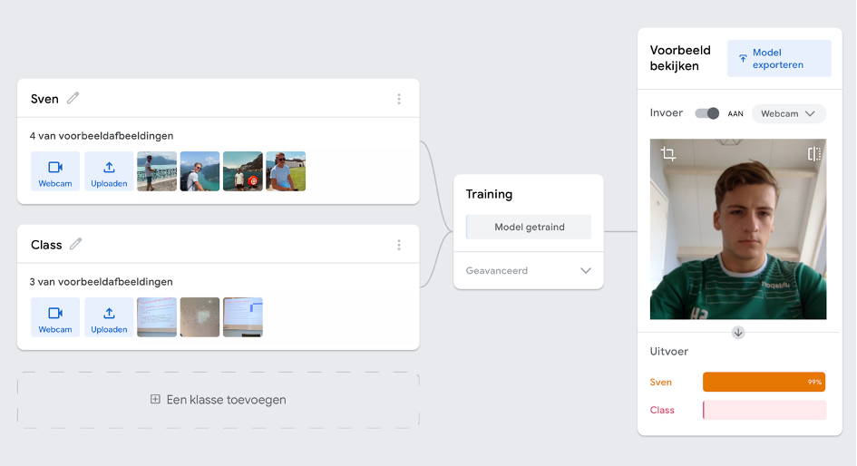
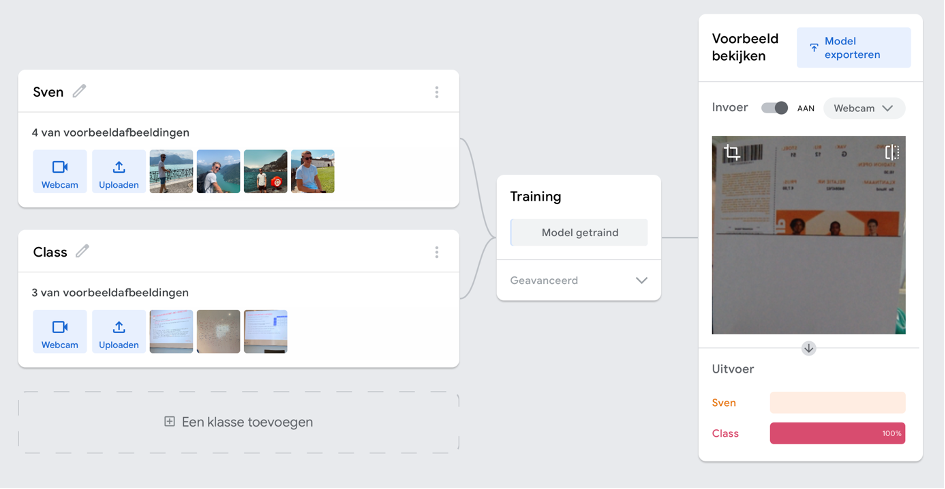

Week 6 : Big Data & Machine Learning
In week 6 van Smart Connection lag de focus op machine Data Driven Decision Making, Machine Learning en AI. Vanuit deze les en presentatie viel duidelijk op te merken dat wanneer een bedrijf Big Data op een goede manier verzameld, deze verder ordent en analyseert het bedrijf hier een hoop profijt uit kan halen. Zo is het namelijk in staat om veel gerichter te werk te gaan en dus beter onderbouwde beslissingen te nemen. Een goed voorbeeld hiervan vond ik persoonlijk het voorbeeld van Auping. Bovendien kan het analyseren van data zelfs voorspellingen doen over bijvoorbeeld de vraag van klanten in de komende maanden naar bepaalde producten. Wanneer je als bedrijf met de tijd mee wil gaan en dus toekomstbestendig wil zijn dan ben je wel bijna verplicht om iets met je data te doen.
Vervolgens werd er verder ingezoomd op machine learning en AI, de 'hide and seek' video ervoer ik als een simpele maar zeer goede manier van uitleg over dit thema. Persoonlijk vind ik het erg interessant om meer te leren over de verschillen tussen traditioneel programmeren en machine learning, ook om op deze manier de toegevoegde waarde van machine learning in te zien.
Opdracht : Teachable Machine
Zelf ben ik later nog met de ‘teachable machine’ aan de slag gegaan om te zien of ik deze ook werkende kon krijgen. Hierbij heb ik de eerste class gevuld met foto’s van mezelf en de naam gewijzigd naar 'Sven'. Vervolgens heb ik de tweede class gevuld met foto’s van schema’s en teksten in de colleges en de naam gewijzigd naar 'Class' i.p.v. 'Class2'. Daarna heb ik de machine laten trainen en leidde dit tot een werkend systeem, dit valt in de onderstaande afbeeldingen te zien. Wanneer ik in beeld kom dan geeft het systeem keurig aan dat de kans 99% is dat ik dit ben en dus tot ‘Sven’ behoor. Vervolgens wanneer ik een ticket met daarop veel teksten in beeld breng geeft het systeem ook aan dat deze voor 100% in ‘Class’ terecht hoort.
 Toepasbaarheid : BuyBay
Wanneer ik kijk naar Machine learning en de ‘Teachable machine’ dan zie ik wel in dat dit zeker mogelijkheden kan bieden voor ons project bij BuyBay. Voor het project is het zo dat Buybay op zoek is naar een oplossing voor hun kwaliteitsafdeling die zij willen verbeteren. Het bedrijf wil namelijk graag het aantal retouren verder verlagen en minder afwijking zien in de grades/rates die producten krijgen bij de kwaliteitscontrole van de graders. Graders zijn werknemers die producten een bepaalde rating (grade) geven bij een kwaliteitscontrole, a.d.h.v. deze controle wordt de prijs van het product bepaald. Zo kan een kras bijvoorbeeld leiden tot een B-grade terwijl een missend onderdeel leidt tot een C-grade. Verschil of fouten hierin kunnen leiden tot een teleurgestelde klant die zijn/haar product terug stuurt omdat het niet aan de verwachtingen voldoet.
Machine learning zou mogelijk aan dit probleem kunnen werken door samen met graders en de software duidelijk richtlijnen op te stellen voor de verschillende grades. Bijvoorbeeld een kras langer dan 2cm en breder dan 3mm kan niet meer onder de B-grade vallen. Wanneer dit duidelijk opgesteld wordt en samengekoppeld wordt met de reviews en beoordelingen van klanten die hun producten hebben ontvangen zou mogelijk de kwaliteitscontrole een stuk verbeterd kunnen worden. Hierbij is het erg belangrijk om ook zeker de reviews en beoordelingen mee te nemen en dus ook te kijken waar verbeteringen nog mogelijk zijn. Machine learning zal uiteindelijk een stuk nauwkeuriger zijn dan zelf het opzetten van een systeem. Als je het al helemaal geavanceerd zou willen maken als bedrijf zou je er zelfs aan kunnen denken dat met behulp van Machine Learning het graden gebeurd en er dus automatisch met het scannen van de fysieke toestand van het product door een machine er een rating/grade aan het product gekoppeld kan worden. Hier heeft BuyBay in dit geval echter niet het budget voor beschikbaar.
9 November : Brainstorm Witek
In onze creatieve sessie werd het implementeren van AI in ons project meermaals genoemd, nadat wij deze ideeën zelf ook al hadden. De meest ideale situatie zou natuurlijk zijn om een oneindig budget te hebben en zoveel mogelijk AI te kunnen integreren in het proces en zo de betrouwbaarheid en dus kwaliteit drastisch te verhogen. Op dit moment is er echter bij BuyBay nog geen budget beschikbaar voor AI, vandaar dat wij het met gratis of hele goedkope toepassingen dienen te doen. Als projectgroep worstelden wij dus nog met de vraag hoe er een eerste opstapje gemaakt kon worden met het integreren van AI op een goedkope manier en voor dit specifieke proces? Uiteindelijk hebben Sophie en ik op dinsdag 9 november hierover gezamenlijk met Witek een brainstorm sessie gehouden.
Hier kwamen voor ons zeer handige punten naar voren. Zo hebben we het gehad over verschillende controlemethodes en een eerste stap om AI te integreren in het proces. Hierbij is het idee om de graders nog steeds stickers bij de beschadigingen te laten plakken alleen deze vervolgens door objectherkenning automatisch geteld worden. Dit zal mogelijk nog niet meteen het proces enorm versnellen maar is wel een goede zet om aan BuyBay te kunnen laten zien waar de waarde van AI voor hun in zou kunnen zitten. Daarna zou er natuurlijk besloten kunnen worden tot geavanceerderde toepassingen. Deze basistoepassing gaan we voor het project in ieder geval verder uitzoeken.
Reflectie : Connection
Aan het begin van deze leerlijn was ik een beetje sceptisch dat ik de aangereikte stof ooit zou gaan begrijpen en beheersen. Als bedrijfskundige was ik eerst vooral geïnteresseerd in het toepassen van de onderdelen op het bedrijfsleven, hiervoor dacht ik vooral kennis nodig te hebben over wat en wanneer iets toe te passen. Uiteindelijk waren de lessen meer gericht op het leren over de onderdelen en er zelf mee aan de gang gaan. Voor mij als bedrijfskundige waren sommige onderdelen zeer pittig, mede door de hoge instapdrempel en het tempo waarmee erdoorheen gegaan werd ondanks dat ik de voorbereidingen deed.
Desondanks blijft het denk ik toch ook wel materie die je pas gaat beheersen op het moment dat je er zelf veel mee aan de gang gaat. Zelf merkte ik bijvoorbeeld dat ik HTML/CSS pas goed ging beheersen op het moment dat ik mij echt volledig ging focussen op het maken van de website. Naar mate ik het beter en beter ging beheersen kreeg ik er ook meer en meer plezier in. Naast HTML/CSS zijn wij natuurlijk ook nog met een hoop andere thema’s zoals bijvoorbeeld Javascript, API en Machine Learning bezig geweest. Van tevoren wist ik eigenlijk helemaal niks van API’s af en vond ik het enorm interessant om te zien hoe websites dit toepassen. Vervolgens heeft de makkelijke toepasbaarheid, wat ik van tevoren totaal niet had verwacht, van Machine Learning ons verder geholpen bij ons project voor BuyBay.
Al met al was het voor mij in het begin wel erg pittig om op te starten met deze onderdelen en ze onder de knie te krijgen, zoals eerder benoemd kwam dit vooral door de hoge instapdrempel en het hoge tempo. Vervolgens kreeg ik het meer en meer onder controle door ermee bezig te zijn. Uiteindelijk heb ik naar mijn mening een mooie website neer kunnen zetten en machine learning en big data goed kunnen gebruiken in ons project. Ik had zelf nooit verwacht deze resultaten neer te kunnen zetten en dit geeft dan ook zeker een erg voldaan en zelfs trots gevoel. Naar mate de tijd vorderde begon ik het ook leuker en leuker te vinden. Al met al ben ik boven mijn eigen verwachtingen uitgestegen en vond ik dit een enorm leuke en misschien zelfs wel de leukste leerlijn van de minor!